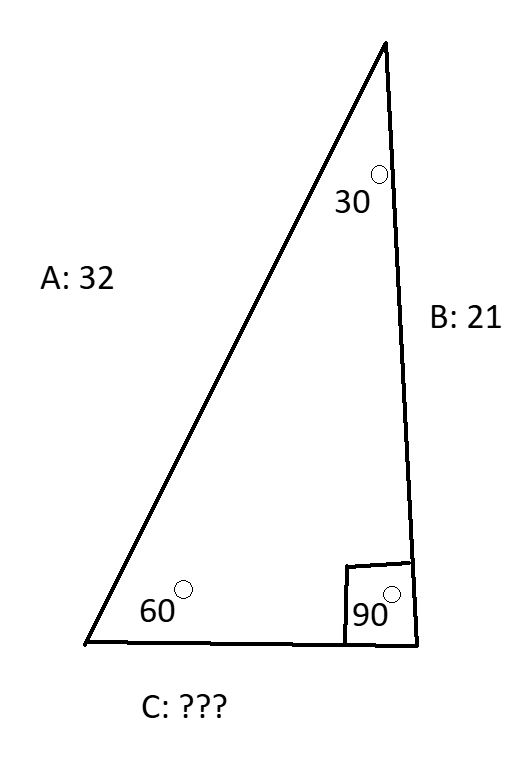

Sin(θ) = 5 / √44
5 over the square root of 44 is approximately 0.75377…Sin =5 / √ 44 = 0.75377
sin A / a = sin B / b = sin C / c
a - length of side a
sin A - Sine of Angle A
b - length of side b
sin B - Sine of Angle B
c - length of side c
sin C - Sine of Angle C
An example of when this formula can be used is when you need to find the missing sides/angles of a triangle… This example triangle’s hypotenuse length is 18 while the only known angle is 45°. In the sine formula, the opposite side is over the hypotenuse. So by using sine, we can figure out the opposite side of the triangle which is the straight line up. First we can put the sine of 45°…
This example triangle’s hypotenuse length is 18 while the only known angle is 45°. In the sine formula, the opposite side is over the hypotenuse. So by using sine, we can figure out the opposite side of the triangle which is the straight line up. First we can put the sine of 45°…
sin 45° = ???
Now we multiply the sine of 45o with the length of the hypotenuse in the triangle…(18)sin 45° = Opposite/18
Now the sine of 45o times 18 equals = 12.727 but to keep it simple, we’re going to round it to the nearest tenth…Opposite ≈ 12.7
The length of the opposite is 12.7.sin 40° / 14 = sin B / 29
Next we multiply both sides by 29 to get angle b on its own…sin 40° / 14 * 29 = sin B
The sine of 40° divided by 14 and multiplied by 29 equals 1.331...1.331 = sin B
The sine of b equals 1.331. Now this is when arcsin is used. Arcsin is the reciprocal of sin where 1 is over the sin of B in this example…∠B = arcsin(1.331)
This is where we run into an issue, the rule with arcsin is that x (the number in the parentheses) cannot be less than -1 and greater than 1. So for this problem, angle b is undefined; it's too large for a real number solution to the problem.Cos = Adjacent / Hypotenuse
Sin = Opposite / Hypotenuse
c = √ (a² + b² - 2ab * cos(C))
b = √ (a² + c² - 2ac * cos(B))
a = √ (b² + c² - 2bc * cos(A))
The length of side c is equal to the square root of side a and b squared and added together minus twice the length of side a and b times the cosine of the opposite of angle c. (also as gamma but will be mentioned later). This may seem a lot for one side but an example would clear some things up…  We can substitute some value in this problem into the law of cosines formula…c = √ (32² + 21² - 2(32)(21) * cos(60°))
c = √ (1024 + 441 - 1344 * cos(60°))
c = √ (1465 - 1344 * 0.5)
c = √ (1465 - 672)
c = √ (793)
c = 28.16
The length of side c is 28.16 (approximately), you would most definitely need a calculator to find side c using this formula.a = √(b² + c² - 2bc cos(A))
a² = b² + c² - 2bc cos(A)
Lets use another example...a = √ 46² + 30² - (46*30*2) cos(90°)
a = √ 2116 + 900 - (46*30*2) cos(90°)
a = √ 3016 - (2760) * cos(90°)
a = √ 3016 - (2760) * 0
a = √ 3016
a =54.918
For side b... The formula for finding side b…
The formula for finding side b…
b = √ a²+c²-2ac *cos(B)
b = √132² + 66² - (2*132*66) *cos(75°)
b = √17424 + 4356 - 17424 *cos(75°)
The cosine of 75° is 0.2588
b = √17424+4356-17424*0.2588
b = √21780 - 4509.3312
b = √17270.6688
b = 131.42
Sin = opposite / hypotenuse
Cos = adjacent / hypotenuse
Tan = opposite / adjacent
Let's say that a triangle has two known sides, being the opposite and the adjacent.Opposite = 12 in
Adjacent = 8 in
Twelve over Eight is 1.5.Tan = opposite / adjacent = sin(θ) / cos(θ)
| Cosine(θ) | Sine(θ) | Tangent(θ) | Angle(θ) | Radians(θ) |
|---|---|---|---|---|
| 1 | 0 | 0 | 0° | 0 |
| √ 3 / 2 | √ 3 / 2 | 1 / √ 3 | 30° | π / 6 |
| √ 2 / 2 | 1 / √ 2 | 1 | 45° | π / 4 |
| 1/2 | √ 3 / 2 | √ 3 | 60° | π / 3 |
| 0 | 1 | undefined | 90° | π / 2 |
| -1 / 2 | √ 3 / 2 | -√ 3 | 120° | 2π / 3 |
| - √ 3 / 2 | 1 / 2 | -1 √ 3 | 150° | 5π / 6 |
| -1 | 0 | 0 √ 3 | 180° | π |